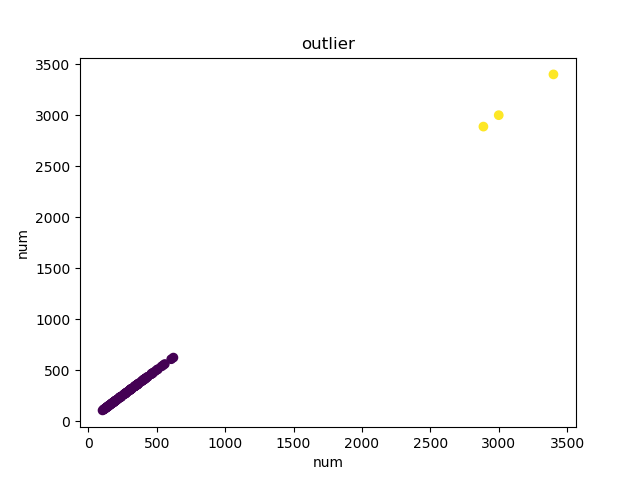

{% extends "base2.html" %}
{% load staticfiles %}
{% block title %}数据源{% endblock %}
{% block content %}
<div class="container" >
    <div class="row">
        <div class="col">
            <br>
            <br>
            <br>
        <div style="text-align: center">
            <span id="table_name">{{table_name}}</span><span>数据</span>
        </div>
        <div class="pre-scrollable">
            <table class="table table-hover table-bordered table-striped">
                {% for i in table %}
                    {% if forloop.first %}
                        {% for key,value in i.items %}
                        <td>{{ key }}</td>
                        {% endfor %}
                        <td>操作</td>
                    {% endif %}
                    <tr>
                     {% for key,value in i.items %}
                        <td>{{ value }}</td>

                        {% endfor %}
                    <td>
                            <a href="{% url 'table_edit' i.id %}?t_name={{ table_name }}" class="btn btn-warning btn-sm">修改</a>
                            <button pk="{{ i.id }}" class="btn btn-danger btn-sm delbtn">删除</button>
                         </td>
                    </tr>

                {% endfor %}

            </table>
        </div>
            <br>
            <span>异常值检测,选择列名</span> <input type="text" id="col_id" placeholder="列名">
            <button class="btn btn-success" id="kmeans">k-means</button>
            <button class="btn btn-success" id="svm">one class svm</button>
            <button class="btn btn-success" id="iso">isoforst</button>
            <button class="btn btn-primary pull-right" id="miss">缺失值检测</button>
        <p id="jiance" style="display: none">检测到两个缺失值，分别是id=8</p>
        <p id="tihuan"></p>
        </div>
    </div>
</div>
<script src="{% static "js/jquery.js" %}"></script>
<script src="{% static "js/bootstrap.js" %}"></script>
<script>
    $('#kmeans').click(function () {
        var col_id = $('#col_id').val();
        var table_name = $('#table_name').text();
        col_id  = table_name +',' +col_id ;
        console.log(col_id)
        $.ajax({
            url:'/kmeans/',
            type:'post',
            data:{
                col_id:col_id
            },

            success:function (response) {
                $("#tihuan").after("");
                console.log(response)
            }
        })
    });
$('.delbtn').click(function () {
            var pk = $(this).attr('pk');
            console.log(pk)
            console.log($(this));
            var ele=$(this).parent().parent();
            var t_name = $('#table_name').text()
            console.log(ele)
            console.log(t_name)
            $.ajax(
                {
                    url:'/delete/'+pk+'?t_name='+t_name,
                    type:'get',
                    success:function (response) {
                        console.log(response);
                        ele.remove()
                    }
                }
            )
        })
$('#miss').click(function () {
    $('#jiance').show()

        })
</script>
{% endblock %}